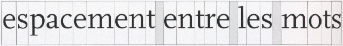
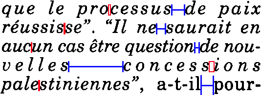
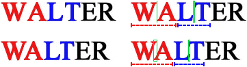
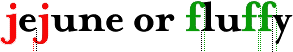
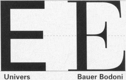
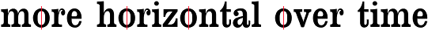

The next steps in the OCR process after the line segmentation, word and character segmentation, isolate one word from another and separate the various letters of a word.
(Moderate lines contain some 65 characters; longer lines induce fatigue as the eye jumps from the end of one line to the beginning of the next line. Some secretaries prefer to flip their monitor vertically.)
In most cases, separating words is not that hard. There’s always a distinct white space between them. (Which means that a word often includes a punctuation symbol.)

The horizontal space between words in a line is called “interword space”. Which leads us to the phenomenon of justification: typographists adjust the interword space and the interletter space to achieve justification! Note how the space between the letters inside a word (“interletter space”) on the 4th line is bigger than the space between two words (“interword space”) on the 3rd line…!

Farsi (or “Persian”), the language of Iran that uses the Arabic alphabet, adds extra spaces between the words to align the text in columnized newspapers, magazines etc.
Arabic solves the same problem in a different way: the space between the words is fixed but the shape of some letters can be elongated (“tatweel” or “Kashida” words). (Farsi does not use tatweel!)
Typical for the Arabic script is that (virtually) all characters inside a word are joined. To apply justification in columns etc., you can either make the characters inside a word longer (as the Arabic language does) or add extra space between the words (as Farsi does).
Separating characters is a different matter. There are many elements besides justification that play a role. (In extreme cases, justification creates spaces between individual letters that may be bigger than the space between two words on the same page. We just illustrated as much!)
When the segmentation breaks up each image or zone of interest into small units for recognition, each character “cell” ideally corresponds to a single character. But a segment can just as well contain a group of connected characters… or only part of a single character. In that case, the segments have to be broken up further in several characters or various discrete segments have to recombined to recognize a letter!
Mind you, character segmentation does not apply when the OCR engine uses word recognition instead of an artificial neural network! That OCR technique was designed to recognize full words at once, it “decodes” the words without a prior segmentation of the word images into characters. (That’s why its specific strength lies is in the recognition of degraded images where characters for instance touch (“ligatures”) or are broken.)
If the characters have the same width (“fixed pitch”), character segmentation is easy. The issue gets more challenging when the width of the letters depends on their shape (“proportional pitch”), when kerning, italic text and touching characters (“ligatures”) occur, and when dot matrix fonts with characters composed of clouds of isolated dots are used.
With fixed fonts, each character of the typeface has the same width. An “i” takes up as much horizontal space on a line as a “w”, as is the case in this sentence. The next character always starts at a fixed distance. Fixed fonts are also called “monospaced” fonts.
Documents produced with old typewriters for instance have a fixed pitch. That’s because the carriage of the typewriter moves a fixed space each time you hit a key: each “cell” that an individual character occupies has the same space.
This does not mean that the character shapes themselves have the same width. Hence, the empty space around the actual symbol may vary somewhat. The character blocks (composed of the glyph and the surrounding space) by necessity cover the same surface!
Segmenting such characters is relatively easy: each character occupies a fixed space on a line. (The unit of measure “characters per inch” or “cpi” indicates the “pitch”, it measures how many characters are printed on a horizontal inch.)
Proportional fonts allow the characters of the typeface to have a different width. A “w” will take up much more horizontal space on a line than an “i”, just the way you see it here. Virtually all fonts you find in newspapers, magazines and books are proportional. So is the body text of this web site.
Comparing the “i” and “w” letters is an easy method of detecting whether a font is proportional or fixed. Here’s another quick test: when the font is fixed, any two lines with the same number of characters on each line are equal in width. The same two lines in a proportional typeface can vary radically in width!
Walter and Willy Wonka went to Iowa for wet water.
123456 123 12345 12345 1234 12 1234 123 123 123456
iiiiii iii iiiii iiiii iiii ii iiii iii iii iiiiii
wwwwww www wwwww wwwww wwww ww wwww www www wwwwww
Walter and Willy Wonka went to Iowa for wet water.
123456 123 12345 12345 1234 12 1234 123 123 123456
iiiiii iii iiiii iiiii iiii ii iiii iii iii iiiiii
wwwwww www wwwww wwwww wwww ww wwww www www wwwwww
Fixed fonts can be used to produce tabular material, proportional fonts can’t: they’re used when exact line lengths are required! (Each time, I put three spaces, not tabs, between the words.)
The unit of measure “cpi” (for “characters per inch”) indicates the “pitch”, the number of typographic characters that fit on each inch of a line of printed type. The measurement applies mainly to fonts that have the same width for each character (fixed fonts). Proportional fonts (with varying character widths) can only have an average cpi.
Segmenting proportional characters is more difficult, because it all depends on the shape of the individual symbol! The “cells” — the correct technical term is “body” — that each character occupies vary in surface.
In printed texts, some letter pairs have more space between them than others because of their shape and slate. Pair kerning automatically reduces the space between such letter pairs to enhance their appearance. Otherwise, they would be spaced too close or too far apart to be aesthetically pleasing.

While the first “WA” and “LT” are non-kerned letter pairs, the second “WA” and “LT” are clearly kerned. The limb of one character projects over-under the body or limb of the other!
The letter pairs “AV”, “AW”, “LT”, “VA” and “WA” are striking examples — well, all you have to do to figure that out is to read this sentence!
WALT, VANNA AND AVNER SHAW’S AWESOME WATER VATS
WALT, VANNA AND AVNER SHAW’S AWESOME WATER VATS
WALT, VANNA AND AVNER SHAW’S AWESOME WATER VATS
WALT, VANNA AND AVNER SHAW’S AWESOME WATER VATS
The various character “cells” overlap each other, making the characters difficult to segment.
Kerning is often confused with tracking. Dead wrong! Kerning influences the esthetic space between specific letter pairs, tracking determines the space between all the letters in a word. More about character spacing in a short while…
And the same goes for italic text! Segmenting the characters vertically won’t do here either, because of the slant of the italicized characters.
There are technical terms for this: typographists speak of “slope”, that’s the angle of the stems and extenders of the letters. Most (but not all) italics are sloped to the right at something between 2 and 20 degrees.
One character “invades” the cell of another. The part of a letter that extends into the space of another is called “kern”.
In many typefaces, without having to be italic (or even bold!), the “j” letter has a kern to the left and the “f” letter has a kern to the right.

“Posture” describes the angle of character’s slant to the base line. Typefaces can have an upright and italic posture. (Typographists actually distinguish “italic” and “oblique” posture, but it’s of no relevance in OCR...) In Latin, Greek, and Cyrillic typefaces (where the writing direction is left to right), the common angle of slanting nowadays is right too. (The backward angle is used very rarely, mainly in cartography.) The left angle is however normal in Arabic and Hebrew scripts with the right-to-left writing direction.
If history is your thing, it was the printer Aldus Manutius (1450-1515), a friend of the philosopher Erasmus, that invented the italic typestyle in 1501 and had the resulting typeface — called the “Aldine” — patented for exclusive use for many years.
Aldus’ font Bembo – very close to the Latin script
Aldus’ italic font Aldine
Manutius, the first printer to mass-produce books with Johannes Gutenberg’s invention, did it to make books smaller in format — preferably in pocket format — and thus make scholarship less expensive. (Manutius published the first “octavo” volume in 1501, today we would call it a “pocket book”… Eight leaves of a book are created from a standard size sheet of paper. In modern common usage, an octavo size book is 8-10” (20-25 cm.) tall.)
The italic letters were not used to emphasize specific words are they are today but were used for body text that takes less space on a horizontal line than normal letters do. That way, you can print a book with less pages, a factor of importance in those days…
His democratic effort was inspired by the “humanistic” Renaissance handwriting style of the poet Petrarch (Giacomo Petrarca) in Northern Italy around 1350. By the year 1400, that script was so widespread throughout Italy that the first Venetian printer Manutius and his punchcutter Fransesco Griffo (real name: Fransesco da Bologna) used it towards the end of the 15th century when they developed a Latin printing alphabet. This explains why cursive letters are still called “italics” in the English language…
We speak of “ligatures” when successive characters touch. The OCR software needs to segment them, but where does one character end and the next begin? Still, the example below shows how powerful state-of-the-art OCR software can be when it comes to recognizing touching characters… (And we’re dealing with a proper name here, a context where linguistics are of no help!)
Know that ligatures can be natural — think of the letter pairs fl and fi — or accidental, the result of lousy image scanning. Natural ligatures are always joined, even when the text is crisp and clear.
In typography, standard ligatures such as fl, fi and on occasion ff, ffi and ffi are specifically designed by connecting two or more letter shapes that collide or combine in an unattractive way; discretionary ligatures — used at the discretion of graphic designers — want to be more ornamental than the standard characters are.

Many ligatures were totally abandoned. Nowadays, you’ll only see them in the opening titles of historic movies and costume drama — think Jane Austen movies and the likes… Or they’re used purely decoratively, for effect. This subtype is called “historical ligatures” — did you know that Microsoft Word supports them?
The st ligature was the last to be abolished. It won’t surprise you that we found these examples mainly in ads for financial institutions: the banks and insurance companies may have caused the financial crisis of 2007, but they still want to be seen as respectable and conservative enterprises!
One of the Latin symbols, the ampersand or & symbol, originally was a ligature of the letters et, the Latin word for and. Marcus Tullius Tiro, Cicero’s secretary, gets credited as the inventor of this character. In his days, the ampersand looked like the image on the right — I show which strokes of the pen he used to write the character. Some italic shapes still remind us of the Latin origin, but the now common stylized shape is a later development.
Until the 20th century, the ampersand functioned as the last and 27th letter of the alphabet (…X Y Z and &). The sequence “… and &” was read as “and per se and”, which means “and [the symbol which] by itself [is] and”. Over time, this expression was shortened, slurred to “ampersand”.
You get accidental ligatures when letters are joined because you’re dealing with a low-resolution fax that contains blurred text, because the document quality is very low, because the scanning is too dark, because the character spacing is reduced etc.
Tracking (also called “letter spacing” or “character spacing”) refers to the manipulation of “interletter space”, the space between the letters in a word. Tracking is used to tighten or loosen text — you can do it too in your word processor! (Unlike “kerning”, tracking influences the space between all characters in a word.)
Tracking is measured in points. With positive or “loose” tracking, the space between the characters in a word is increased, with negative or “tight” tracking, it is decreased. Mild tracking is OK, bigger tracking gets noticed by the user and diminishes the readability of a text.
When the character spacing is too reduced, character recognition becomes impossible. (Word recognition is better equipped to handle such cases than the neural networks are!)
Dot matrix characters are the opposite case. A single character isn’t composed of one but of several “clouds” of pixels. It’s usually the dryness of the ribbon that determines how bad things are… In other words, the OCR doesn’t have to segment individual speckles, but recompose them to form a symbol!
Let’s be accurate in our terminology: with “draft dot matrix printing”, also called “9 pin” dot matrix, you can still distinguish the individual dots that compose a symbol. That’s the special case we were just discussing. With “letter quality dot matrix printing” (also called “NLQ” or “25 pin” dot matrix), you can no longer distinguish the individual dots that compose a symbol. The printing quality approaches the quality of a laser printer.
Korean documents can be tricky for a similar reason: see how “fragmented” the Korean symbols can be…
None of these extreme segmentation problems occur when you’re dealing with the other Asian languages — Chinese and Japanese. These languages are derived from picture writing. They are written with thousands of distinctive characters called “ideograms” or “pictograms”. Every character has exactly the same amount of space, no matter what its shape may be. There are no spaces between characters; the characters which make up multi-syllable words are not grouped together. When reading Chinese for instance, you have to work out which characters belong together!
Occasional, minor fractures rarely perturb the recognition, but totally broken characters can be a different story. Similar to the dot matrix printouts, these characters have to be recomposed first!
State-of-the-art OCR software is equipped with specialized routines to read light text with broken characters — we’re now talking about word recognition of course…

The “contrast” describes the difference in thickness between the thickest and thinnest points of the curved strokes. The “stress” (or “axis”) is the angle at which contrast occurs: it is the imaginary line that runs through the thinnest parts of the character’s loops.
(Don’t mistake “axis” for “slope”. “Slope” describes the angle of inclination of stems and extenders of letters. Italic letters are sloped to the right. But as the Footlight font above shows, letters do not have to be italic to have contrast and stress!)


Letters with contrast imitate the thinning of the stroke in round letters of Roman origin. The “axis” of a letter was the axis of its stroke, the angle of the pen used to create the letter.
Contrast is best observed by looking at for example the letter “O”. Note if the bottom left is thicker than the top left, and the top right is thicker than the bottom right. If this difference exists, the letter has diagonal stress. Stress usually ranges from vertical to a somewhat back-slanted diagonal: in old-style typefaces, the axis is inclined to the left, while in transitional and modern types it is generally vertical… If the two halves of the “O” are a mirror image of each other, with the sides thicker than the top-bottom, the letter has vertical stress.
If the top and bottom of the “O” have the same thickness as the sides, there is neither contrast nor stress. Fonts are called “monoweight” where there is no visual contrast between the thick and thin strokes of a letter form.
Broadway — you ’ve all seen this font before — is a typeface whose “character” is defined by extreme contrast: some strokes are very thick, other are very thin.
Historically speaking, the stress changed as new font styles were developed. Over time, the axis shifted from far left to horizontal. The reason for this is that font designers were less calligraphic as time passed, less inclined to imitate handwriting with their print fonts…
Strong left axis, weak to average contrast (about 3/1), strong calligraphic influence.
Centaur

Guardi
Moderate left axis, weak to average contrast (about 3/1).
Garamond

Bembo
Vertical or almost vertical axis, strong contrast (about 5/1).
New Baskerville
Janson
Vertical axis, very strong contrast (about 7/1), oval shape, high letters.
Bodoni
Bauer Bodoni
Vertical axis, weak contrast (about 2/1), square shape, thick strokes.

Clarendon
Serifa
Small wonder that the thinnest parts are the first to go when the scanning is too bright…! A typeface’s stress learns you which parts of a character will be missing first. You get “hairline fractures” when only the thinnest parts of the loops are broken. “Hairlines” are the thinnest part of a glyph — other than the serif. Darken your scans by adjusting the brightness and you can avoid these fractures!
(The thinnest lines you can draw (and print) with software — smaller than a mm. — are called “hairlines” too. They’re not of the receding kind, mind you!)
Handwritten documents are not read by OCR systems. It takes specialized “ICR” (“Intelligent Character Recognition”) software to recognize handwritten data.
There are several reasons for this. The human hand is too frivolous, unsteady to make the recognition possible. The pressure applied by the human hand on the paper is unequal; the “printing quality” is very variable. Handwritten symbols yield fundamentally different images and shapes, and it takes specialized recognition techniques to recognize them.
And that’s not all. There are actually two types of handwritten data: “handprinting” and “cursive handwriting”. Block letters and handwritten digits such as the number ‘1000’ above are isolated: it’s as if they were “printed” by a human hand. Such “handprinting” can be read with dedicated ICR software as you find in form reading applications.
(The stuff that OCR deals with is called “machineprinting” — which means material from offset printing presses, laser, inkjet, typewriters, and matrix printers etc.)
But when you write full words, the letters are always slanted and connected. Cursive handwriting can’t be segmented — all characters touch. Where does one character begin and where does the next start? Which extra loops are added to connect the symbols?
It takes highly specialized routines to recognize this kind of data. Such software reads words, rather than characters, and only shows up in high-end applications where you read a limited number of words on forms, financial documents etc. Such a system is for instance trained to read, say, the words “one”, “two”, “seventy”, “hundred”, “thousand” etc. on checks, but not any word.
If you own a tablet or another mobile device on which you enter instructions and data with a stylus on the screen, know that this is not the same thing! The handwriting recognition software of such devices tracks the movement, speed and pressure of the stylus moving across the touch screen, not an ink trace that your hand leaves on a piece of paper.
Not to mention that the “tuneable” solutions require extensive training of your handwriting while other systems force you to use a particular, unnatural handwriting style. The user is then forced to employ a fixed set of reference strokes if the PDA software is to recognize any characters!
Admittedly, styluses have gone out of fashion thanks to Steve Jobs, who resented them personally and didn’t want to hear of them for i(Pad)OS, the operating system behind the iPhone smartphones and the iPad tablets, but let’s investigate the technology involved anyway for a second…
Have a quick look at this popular “shorthand alphabet” used on Palm devices to see how unnatural the strokes can be: the “A” is actually a inverted “V”, the symbols “F”, “T” and ‘4’ are only portions of the normal Latin symbols. These characters are simplified so that you can draw them in a single stroke with your pen-sized stylus! (And the characters are written one by one — no recognition of cursive handwriting here!)
The heavy dot just indicates the starting point — you’re not expected to draw a dot somehow on the touch screen! The system tracks the starting point and the direction of your hand’s movements: certain characters are stylized, simplified so that they can be easily drawn. See for instance the “K” and the ‘4’ symbols!
The letters and digits are written on a different writing area of the touch screen: it’s for instance the only way to distinguish the letter “O” and the digit ‘0’. A “shift code” is created on the touch screen to indicate whether the symbols that follow are uppercase or lowercase characters — which explains why you don’t find any lowercase characters in the chart! (The uppercase characters are easier to write and bigger — that’s why they were chosen.)
Actually, we could go on for another while: special strokes are used for the punctuation marks and for special symbols such as Euro (€) and dollar ($), the accents are created separately etc. But the conclusion is clear by now: all of this has to do with the pressure your stylus applies to the touch screen. And none of it would work in the optical world where ink leaves a trace on the paper that gets picked up the scanner.
Scans of text written manually on paper are very different in nature from both handprinted symbols and the shorthand alphabets used by handwriting recognition software for handheld devices. Just have a look at the image below: when scanned, the image is even fainter than a computer printout in a dot matrix font.
You may argue that in Arabic, the characters of a word are linked too and yet, OCR software that can successfully recognize it exists alright. True, but know that it takes highly specialized OCR routines to recognize Arabic documents, and that the images are never as degraded as handwritten (Latin) text!
It’s no surprise that the characters
are joined in Arabic: historically
speaking, the Arabic script is an imitation of
handwriting! Most letters are joined to the following
letter of the same word and some combinations of letters
form special “ligatures”. Only a few letters
(“disjoined letters”), for instance alif
( )
and the phonetic symbol hámza
(),
are not connected to the next letter in the word!
(We repeat that Arabic is written from right to left: the
“next” letter is on the left, not on the
right.)
)
and the phonetic symbol hámza
(),
are not connected to the next letter in the word!
(We repeat that Arabic is written from right to left: the
“next” letter is on the left, not on the
right.)

And there’s more: to justify printed text placed in columns etc., the shape of some letters can be elongated (“Kashida” or “tatweel” words) — all of which is very different from the Latin script!
Farsi (a.k.a. “Persian”), the language from Iran that also uses the Arabic script, does not use elongated letters. Extra spaces are added between the words to align the text in columnized newspapers, magazines etc.
Let’s take things step by step, shall we? — Take us where the rainbow ends! — B is for binarize — What gets read and what doesn’t — Lines, lineskew and drop letters — Segmenting words and characters — Stylized fonts — Why is OCR software called omnifont? — What’s the role of linguistics in the OCR process?
Home page — Intro — Scanners — Images — History — OCR — Languages — Accuracy — Output — BCR — Pen scanners — Sitemap — Search — Feedback – Contact